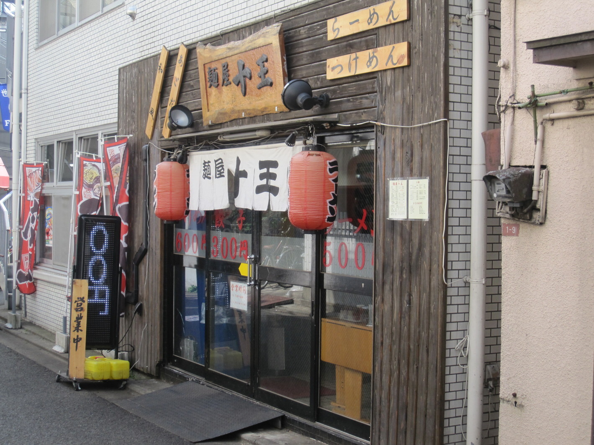
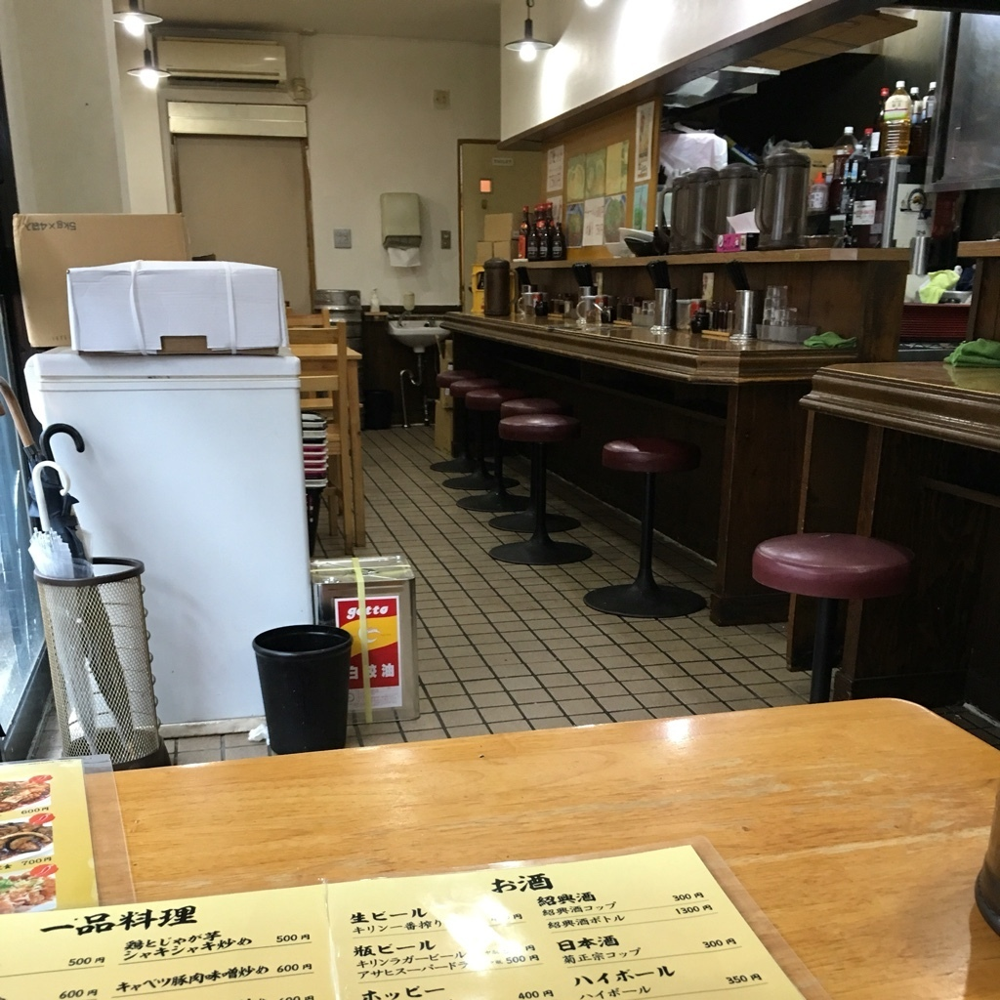
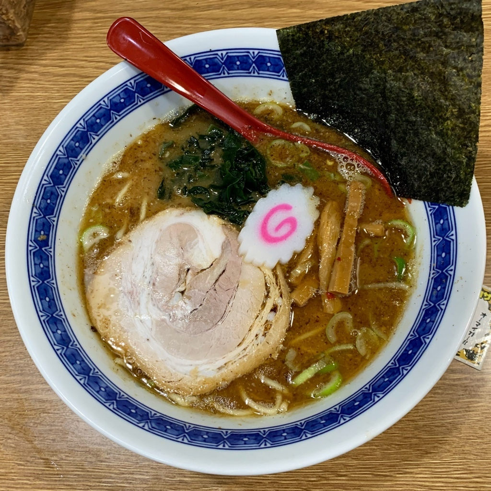

[東京 世田谷]
麺屋 十王

おすすめのポイント
京王線八幡山駅から、歩いて２分ほどのところにあるお店です。
仕事帰りに立ち寄りたくなるような雰囲気があります。
路地を少し入ったところにあるため、そこまで混雑もせず一人で入りやすいです。
店内は昔ながらのお店という感じで、ふらっと入れるのもおすすめです。

豚骨と魚介系を掛け合わせた濃厚なラーメンが看板メニューでした。

その他にも、定食やお酒のおつまみなど、メニューが豊富です！
お店の情報
| 店名 | 麺屋 十王 |
|---|---|
| 住所 | 東京都杉並区上高井戸1-1-9 |
| アクセス | 京王線八幡山駅から徒歩１分(52m)
|
| 電話 | 03-5317-2936 |
| 営業時間 | [全日] 11:00〜23:00 |
| 定休日 | 無休
|
| 予算 |
ランチ ～999円
ディナー ～999円 |
| HP | https://tabelog.com/tokyo/A1318/A131809/ 13129466/ |